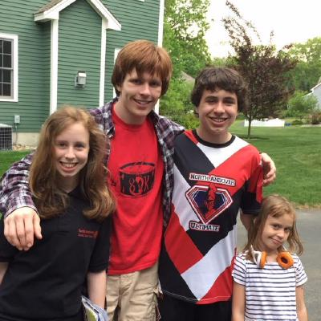

Information about Terry Hearst
I'm Terry! I am a Senior CS major at WPI! I'm also getting a minor in music.
A picture of me (second from the left) and my siblings!
About Me
Some CS courses I have taken at WPI are:
- Introduction to Computer Science, Object Oriented Design Concepts
- Systems Programming Concepts, Intro to Machine Org and Assem, Operating Systems
- Database Systems I, Software Engineering
- Foundations of Computer Science, Algorithms
- etc. etc.
I am involved in many musical ensembles on campus, including:
- WPI Marching/Pep Band
- Concert Band
- Orchestra
- Percussion Ensemble
- Brass Ensemble
Experience
Technology Experience
| HTML | Some |
|---|---|
| CSS | Minimal |
| Java | A lot |
| JavaScript | A fair amount |
| Ruby | None |
| Python | Some |
| Unit Testing | A fair amount |
Working experience
- Software Engineering Intern at Vestmark - Summers of 2016, 2017, and 2018
- Software Engineering Intern at Synopsys (formerly Black Duck Software) - Summer of 2019